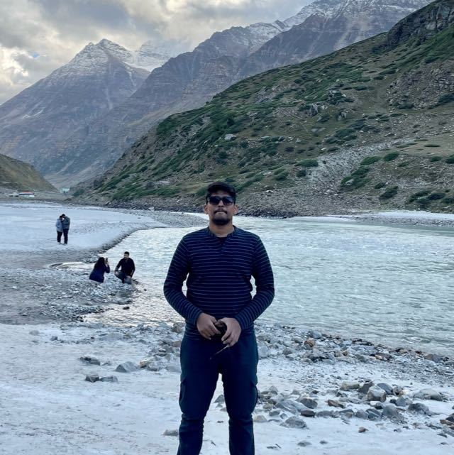

B-tech EEE
NIST Berhampur
I have completed my Btech degree with specilization in Electrical and Electronics. learn lot of concept and tools like matlab and cadence
CGPA 7.8
Programmer Analyst
Seeking a Frontend react and JavaScript Developer role to enhance and explore my technical knowledge gained at University in the last three years. I hold a B.Tech degree from NIST and currently working as Data modeler in Cognizant since last 1 year.
NIST Berhampur
I have completed my Btech degree with specilization in Electrical and Electronics. learn lot of concept and tools like matlab and cadence
CGPA 7.8
ODM Public School
I have completed Intermediate in Science from ODM pubic School and Secured a meritious Score at the end
PER-91%
Bethany Convent School
I have completed my Matriculation From Bethany convent School and Math was my favorite Subject along with that I scored a Meritious Score at the end
PER-90%
Programmer Analyst
Experienced in Bigdata Tools and Data Modeling.
This current project is based on migration of a leading life science based Pharmaceutical organization DATA from their on-premise bigdata platform to AWS cloud based platform had used and learnt various tools such as Databricks, Hive, Spark and Snowflakes. My role in this project is to code various Data transformation script in Databricks and to query and check data availability in hive and to Analyze and later worked as a junior Data Modeler for Data modeling the Data Objects
Intern Web Developer
Full Stack Web Development along with Data structures and problem solving skills, Learn and implemented web technologies like HTML, CSS, JavaScript, React, Bootstrap Worked on various projects like Responsive News App, Weather App ,Quizzing app, Personal Resume page Business Communication skills.
Vocational Training
I have done my Vocational Training during my Graduation in IOCl department Captive power plant,i learned lot of industrial equipment ,tools and techniques for gwnwerating efficienr power for IOCl